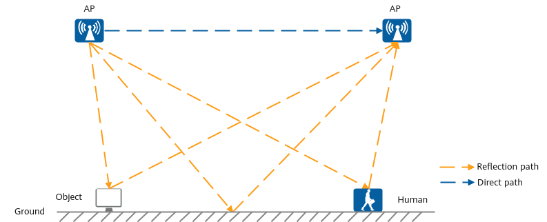
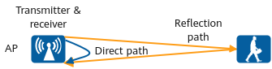
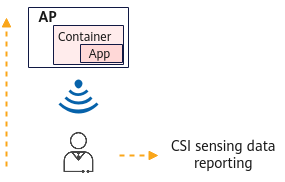
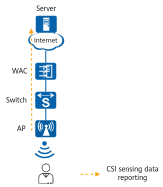

Understanding CSI Sensing
Concepts
CSI is an important concept in wireless communications. It provides detailed data of the end-to-end signal transmission process. CSI data, which includes amplitude attenuation and phase offset during propagation, is carried in subcarriers. These are formed by dividing a channel using Wi-Fi orthogonal frequency division multiplexing (OFDM) technology.
Technical implementation of CSI sensing technology
- Multipath effect of radio signal propagation
Due to the propagation characteristics of radio signals, the electromagnetic wave signals radiated by a transmit antenna can reach a receive antenna either through a direct path or by reflecting off the surrounding environment (such as walls, human bodies, furniture, and other objects). Finally, the electromagnetic wave signals reaching the receive antenna are the superposition of direct-path signals and multiple reflection-path signals.
Figure 1 Multipath effect of radio signal propagation
- CSI changes
Environmental changes can result in changes in the reflection paths as well as in CSI data. When no object moves in an environment, the paths of multipath signals are relatively stable, and there are only slight changes to CSI data. When a person or object moves in the space, the signal reflection paths change (for example, a path is blocked or a reflection path is added). This causes the amplitude and phase of multipath signals to change after being superimposed, resulting in fluctuations in CSI data.
By collecting and analyzing the variation pattern of CSI data, CSI sensing technology can detect the presence of humans, identify behaviors, and even measure weak fluctuations due to breathing and heartbeats. For example, when a person is sleeping, the only movements are regular changes in the chest position due to breathing. By extracting the regular changes of CSI, the chest movements can be detected, making it possible to identify whether a person is present.
Implementation
A single AP can sense centimeter-level movements in the environment using the sonar-like capability, without the need for other devices. This greatly reduces deployment and maintenance costs.

Network Architecture
CSI sensing allows you to select one or more of the following data reporting modes based on the network requirements:
- Reporting to iMaster NCE-CampusInsight:
CSI sensing works based on Huawei's intelligent network analysis platform iMaster NCE-CampusInsight, and is controlled by the AP power-saving license on iMaster NCE-CampusInsight.
After collecting and calculating CSI data, APs report the data to iMaster NCE-CampusInsight, which displays the physical and digital map and provides the intrusion detection alarm, among other functions. In addition, iMaster NCE-CampusInsight provides interfaces for interconnecting with third-party application systems to implement more applications such as intelligent shutdown of electrical appliances.
Figure 3 Network diagram of reporting CSI sensing data to CampusInsight
- Reporting to the AP container
Applications can be deployed in the container of an AP. The AP can report CSI sensing results to the applications through the internal communication channel between the AP and container. Based on the sensing results, the applications can then control IoT devices through built-in Bluetooth or other methods in the AP to implement energy saving and shutdown, achieving local closed-loop management. In addition, the application can report the sensing result to a server on the network after receiving the sensing results from the AP.
Figure 4 Network diagram of reporting CSI sensing data to the AP container
- Reporting to a server
APs can directly report the CSI sensing results to a server on the network. The server triggers IoT devices to complete operations such as energy saving and shutdown based on the received data.
Figure 5 Network diagram of reporting CSI sensing data to a server